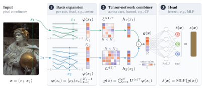
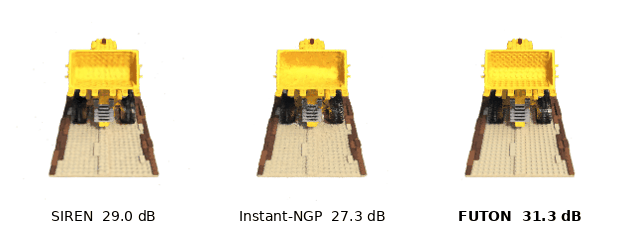
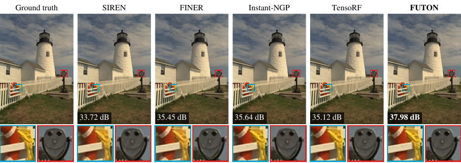
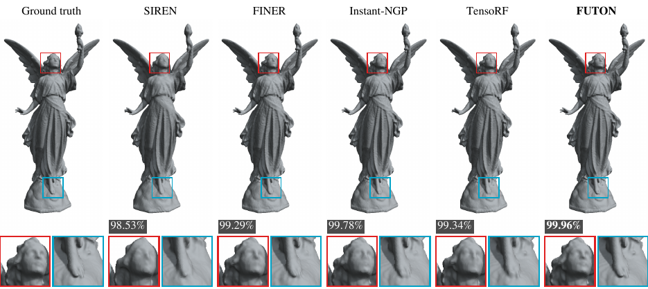
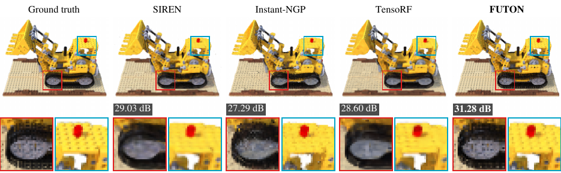

Inro is a PyTorch package for implicit neural representations (INRs): a unified framework for implementing, training and evaluating them. It features the official implementation of FUTON, introduced in our paper, and major INR architectures such as SIREN, FINER, RFF, Instant-NGP and TensoRF behind one interface. Reusable components and pipelines cover image and volume representation and novel view synthesis.
FUTON against the strongest baseline¶
Every model of a task has the same parameter budget, and times are median training times per signal on an A100, from the same runs as the scores. FUTON makes the best trade-off of speed and reconstruction quality on every task.
Images, Kodak
+0.90 dB
37.63 dB against MFN's 36.72, in 4.1 s against 57.3 s.
Occupancy, Stanford
+0.21 %
99.90 % IoU against GA-Planes' 99.69 %, in 5.4 s against 62.2 s.
Radiance fields, Blender
+0.60 dB
29.22 dB against FINER's 28.62, in 152 s against 219 s.
How FUTON works¶
Most INRs hide their prior in the nonlinearity: sines, Gabor wavelets, Gaussians, or a hash-grid lookup in front of a ReLU network. FUTON puts the prior in the parameterization: the signal is expanded in a fixed basis along each coordinate axis, and the coefficient tensor of that expansion is stored in low-rank form.


-
Fast
A point costs \(O(CKR)\) for \(C\) axes, \(K\) basis functions per axis and rank \(R\). On a grid, each axis is evaluated once per distinct coordinate and shared by every point on it.
-
Accurate at equal size
At matched parameter counts FUTON leads every baseline on the average of Kodak images, Stanford occupancy volumes and Blender radiance fields.
-
Transparent
With a linear head FUTON is a rank-\(R\) CP model of the signal in the chosen basis, so bandwidth (\(K\)) and capacity (\(R\)) are explicit knobs, with a computable error bound.
See the difference¶

Results¶









Quality against training time for FUTON and the strongest model of each family, with bands of one standard error; every model's final quality against its training time; and against its inference speed, with the volumes' two models below 98 % IoU on the axis line and FreSh, whose frequency search takes minutes, at the end of the time axis. The benchmarks page has every model, metric and error bar.
One interface¶
Every model maps coordinates in \([-1, 1]\) to values, so one training call fits them all.
import torch
import inro
dataset = inro.ImageCoordinateDataset("data/Kodak/kodim19.png") # (1)!
H, W, _ = dataset.target.shape
model = inro.FUTON( # (2)!
in_features=2,
out_features=3,
basis=("cosine", {"num_components": [H // 2, W // 2]}),
combiner=("cp", {"rank": 280}),
head=("mlp", {"hidden_layers": 1, "hidden_features": 64}), # (3)!
output_activation=torch.tanh,
)
result = inro.train(model, dataset, dataset, num_steps=1000, lr=1e-1, metrics={"psnr": inro.psnr})
print(result["history"][-1]["eval"]) # {"psnr": 37.8}
- Any RGB image: a path, a tensor or a PIL image. Each access returns every pixel's coordinates and color.
- Swap in any other model of the zoo, such as
inro.SIREN(2, 3, hidden_features=256, hidden_layers=4, output_activation=torch.tanh). The training call stays the same. - An MLP with one hidden layer 64 wide, whose first layer reads a whole image off the combiner's grid in one contraction.
Explore¶
-
Install the package and fit your first INR in a dozen lines.
-
How models, datasets and the training loop fit together, FUTON stage by stage, and its error bound.
-
Images, occupancy volumes and radiance fields, and notebooks that run each end to end.
-
The benchmark protocol, every table and figure, the ablations, and how to reproduce them.
-
Every public class and function, with shapes and defaults.
-
Coordinate ranges, memory, backends, and what else goes wrong first.
Citation¶
If you use Inro or FUTON in your research, please cite the paper:
@article{ashtari2026futon,
title = {{FUTON}: Fourier Tensor Network for Implicit Neural Representations},
author = {Ashtari, Pooya and Behmandpoor, Pourya and Deligiannis, Nikos and Pi{\v{z}}urica, Aleksandra},
journal = {arXiv preprint arXiv:2602.13414},
year = {2026}
}
The name comes from the inrō, a Japanese case of stacked compartments. The logo is a disc of three compartments, cut by two cosines of rising frequency, as in FUTON's Fourier basis. The code is released under the MIT license.